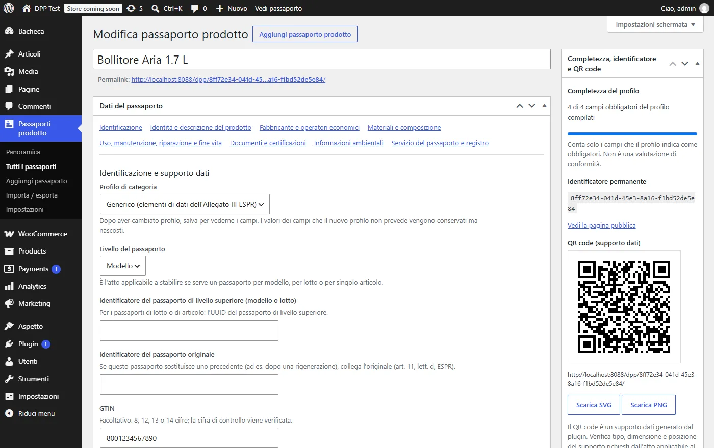
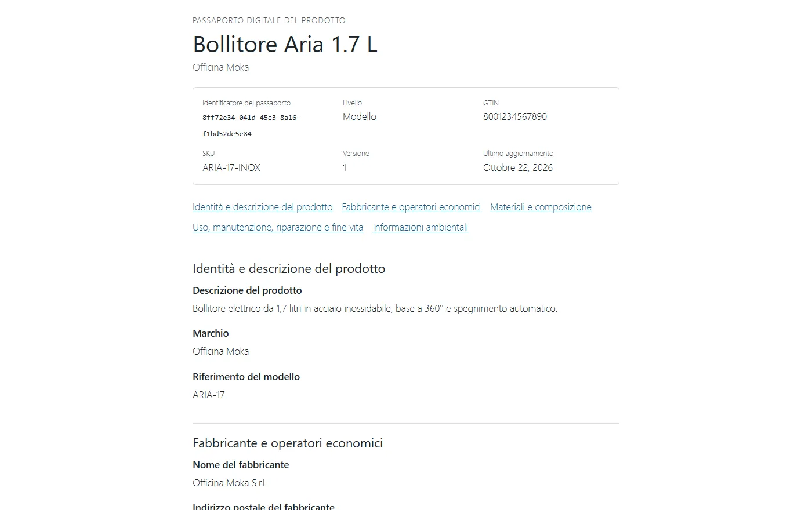
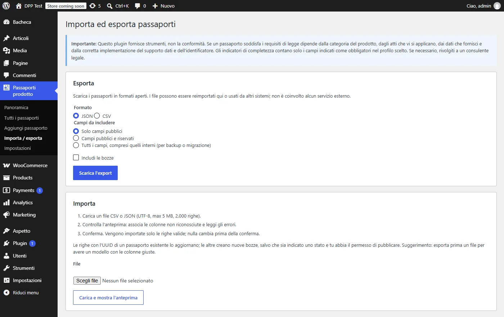

A WordPress plugin for digital product passports, the record that EU ecodesign rules will ask many products to carry. It runs inside any WordPress site, with no external service behind it.
- Role
- Design, code, testing
- Platform
- WordPress 6.5+, PHP 7.4+
- Core
- PHP · REST API · Gutenberg
- Status
- Version 0.1, in development

Six parts, one plugin
Passport editor · Public page · QR codes · Import and export · Read-only API · WooCommerce
It gives teams the tools to publish a passport. It does not certify products or speak for the law. The interesting part is how it is built.
Architecture
Strict layers inside one WordPress plugin: pure domain logic, persistence, and a single serializer that every output goes through.
One rule for visibility
Every field is public, restricted or internal. The rule lives in one place, and the public page, the API and every export go through the same serializer, so nothing leaks through a side door.
Addresses that never move
Each passport gets a UUID that becomes its permanent address. A QR code printed on a box today still opens the right page after edits, renames or archiving.
A QR encoder of its own
No third-party library and no remote service: the encoder follows the QR standard in plain PHP, including Reed-Solomon error correction, and is checked against an independent decoder.
Least privilege
Dedicated roles for editors, managers and authorised viewers. The REST API is read-only, drafts never reach the default WordPress endpoints, and the history keeps which fields changed, not their values.
By the numbers
- end-to-end checks passing
- 43
- HTTP checks, CSRF included
- 23
- accessibility violations, WCAG 2.2 AA
- 0
- QR test cases read by an independent decoder
- 7/7
- calls to external services
- 0
- lines of PHP, layered
- 5.2k
Error correction, by hand
A QR code survives scratches because of Reed-Solomon codes. This is the step that computes the error-correction bytes: polynomial division over a finite field, written directly in PHP so the plugin needs nothing from outside.
includes/qr/class-qr-code.php · PHP 7.4+
private function rs_remainder( array $data, array $generator ) {
$degree = count( $generator ) - 1;
$rem = array_fill( 0, $degree, 0 );
foreach ( $data as $byte ) {
$factor = $byte ^ $rem[0];
array_shift( $rem );
$rem[] = 0;
for ( $j = 0; $j < $degree; $j++ ) {
$rem[ $j ] ^= self::gf_mul( $generator[ $j + 1 ], $factor );
}
}
return $rem;
}Inside the plugin


Stack
| Platform | WordPress 6.5+ | PHP 7.4 to 8.3 | Tested on 6.8 and 7.1 |
|---|---|---|---|
| Data | Custom post type | Structured meta, own history table | UUID v4 |
| Front end | Gutenberg block | No build step, standalone template | Printable |
| API | REST odpp/v1 | Filtered by role | Read-only |
| Integrations | WooCommerce | Optional link from products | Optional |
| Quality | PHPCS | WordPress and PHP compatibility rules, axe-core | 0 errors |
| Languages | English, Italian | Translations for PHP and the block | i18n |
Rules it plays by
- Tools, not compliance: it never claims to certify a product.
- Everything runs locally, with no calls to external services.
- Passports stay available: archiving keeps them public, uninstalling keeps the data.
- Personal data kept to a minimum, with export and erase built in.